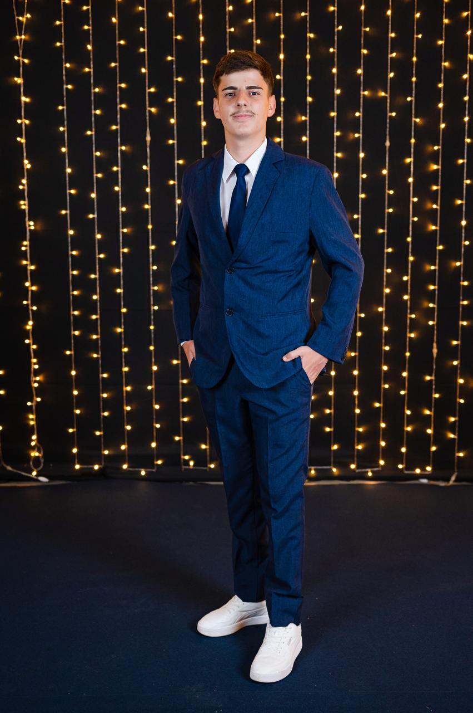

Sobre Mim
Olá! Sou Gustavo Buback Endlich, atualmente trabalho como administrador na empresa Coopermontanhas. Estou cursando Sistemas de Informação na UVV e quero me tornar um programador no futuro.
Objetivos Profissionais
Meu principal objetivo é me tornar um desenvolvedor web e ter minha própria empresa de desenvolvimento.
Minhas Habilidades
- Boa comunicação
- Administração
- Vontade de vencer
Vida Acadêmica
| Nível | Instituição | Período |
|---|---|---|
| Ensino Fundamental | Escola Pública do Interior | Concluído |
| Ensino Médio Técnico | IFES Centro Serrano | Concluído |
| Graduação | Sistemas de Informação - UVV | Em andamento |
Interesses Pessoais
Fluminense Football Club
Sou torcedor do Fluminense. Minha música favorita é o Hino do Fluminense e meu video favorito é o da conquista da libertadores e gosto de assistir documentários sobre a conquista da Libertadores pelo clube.
Hobbies
Meu principal hobby é jogar futebol.